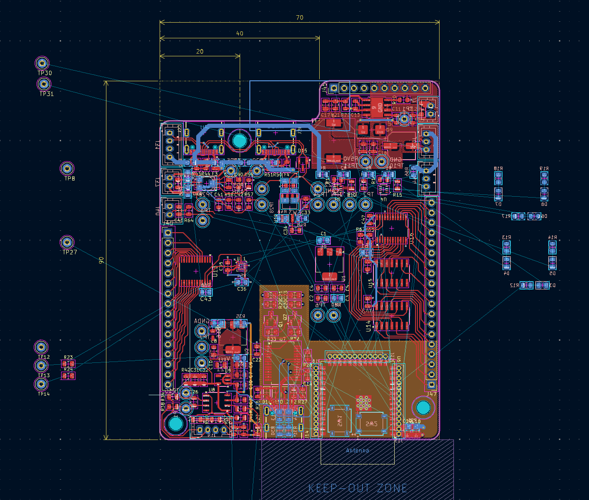

PCB Layout Session 5
I continued laying out and routing the Service PCB. I decided to remove the jumper pin headers and use only 0-ohm resistors. Although jumpers are convenient for quick configuration, they may encourage configuration changes while the board is powered. The 0-ohm resistors are still easy to add or remove, occupy less space, and are more appropriate for the limited board area. Therefore, only 0-ohm-resistor footprints will be used for configuration.
